Proportionales Hazardmodell nach Cox
COX-Model-Estimator
Zusammenfassung
Die Schätzung mit dem proportionalem Hazardmodell nach Cox ist eine klassische Halbparameter-Methode im Bereich der Lebensdaueranalyse. Ein Cox-Modell stellt eine Schätzung der Wirkung bereit, die auf die Lebensdauer bzw. das Überleben von Variablen und dem Risiko des Todeseintritts bei dem Einzelnen ausgeübt wird. Mit Hilfe der Regressionsanalyse nach Cox erhalten wir eine Gleichung für das Risiko (Hazard) als eine Funktion von mehreren Variablen. Ein positiver Regressionskoeffizient für eine erklärende Variable bedeutet, dass das Risiko (Hazard) höher ist bei höheren Werten dieser Variablen, während bei einem negativen Regressionskoeffizient für eine erklärende Variable das Risiko niedriger ist bei höheren Werten dieser Variablen.
Die Annahme der proportionalen Hazardmodelle lautet: Beobachtungen sollten unabhängig sein, und die Hazardrate sollte über die Zeit konstant sein; das heißt, die Proportionalität der Risiken von einem Fall zu nächsten sollte nicht über die Zeit variieren.
Was Sie lernen werden
Dieses Tutorial zeigt Ihnen, wie Sie:
- eine Schätzung mit dem proportionalen Hazardmodell nach Cox durchführen.
- die Ergebnisse interpretieren.
Eine Schätzung mit dem proportionalen Hazardmodell nach Cox durchführen
- Öffnen Sie ein leeres Arbeitsblatt. Wählen Sie Hilfe: Ordner öffnen: Sample-Ordner ... im Menü, um den Ordner "Samples" zu öffnen. Öffnen Sie in diesem Ordner den Unterordner Statistics. Dort befindet sich die Datei phm_Cox.dat. Ziehen Sie diese Datei per Drag&Drop in das leere Arbeitsblatt, um sie zu importieren.
- Wählen Sie Statistik: Lebensdaueranalyse: Proportionales Hazardmodell, Cox, um das Dialogfeld zu öffnen.
- Geben Sie die Spalte A(X): month in den Zeitbereich ein. Geben Sie entsprechend die Spalte B(Y): status in den Zensorbereich ein.
- Klicken Sie auf die interaktive Schaltflläche für die Datenauswahl und wählen Sie die Spalten Charlson und tKt_v im Bearbeitungsfeld Kovariatebereich.
- Wählen Sie 0 als den Zensierungswert aus der entsprechenden Auswahlliste.
- Aktivieren Sie die Kontrollkästchen Überleben und Hazard in der Gruppe Überlebensdiagramme.
- Klicken Sie auf OK, um die Schätzung mit dem proportionalen Hazardmodell nach Cox durchzuführen.
- 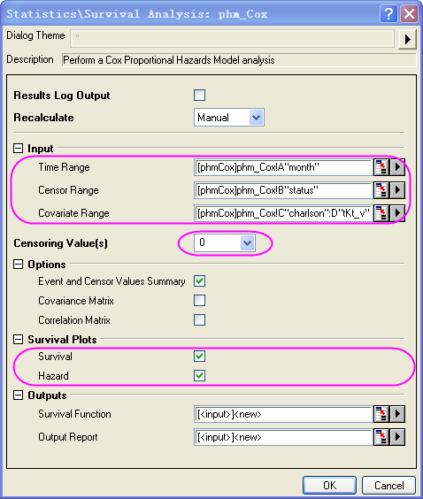
Ergebnisse interpretieren
Wechseln Sie zum Arbeitsblatt CoxPHM1 für den Analysebericht.
- In der Tabelle "Zusammenfassung der Ereignis- und zensierten Werte" können wir sehen, dass Zensiert =112 und Prozent zensiert = 0,8.
- 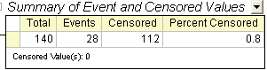
- Die folgende Tabelle zeigt das Testergebnis an, ob das Modell signifikant ist oder nicht. Beachten Sie, dass die Nullhypothese 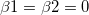 lautet. In diesem Beispiel ist Wahrsch. > ChiQuadr. = 4E(-4) < 0,05, daher weisen wir die Nullhypothese zurück, d. h., entweder 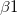 oder
 oder beides 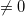.
oder beides 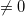.
- 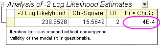
- In der Tabelle "Analyse der Parameterschätzungen" beträgt die Koeffizientenschätzung von charlson 0,2876 und Wahrsch. > ChiQuadr. = 5E-4 < 0,05 , das heißt, dass 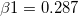 und charlson eine signifikante Variable ist. Die Hazardrate kann als die vorhergesagte Änderung des Risikos interpretiert werden für eine Einheitenerhöhung im Prädiktor. Für die Variable charlson beträgt die Rate Hazard-Verhältnis = 1,333. Das bedeutet, dass das Risiko (Hazard) 1,333 mal so groß ist, wenn das Inkrement von charlson einer Einheit entspricht. Entsprechend ist tKt_v eine signifikante Variable. Die Koeffizientenschätzung von tKt_v ist 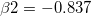 und das Hazardverhältnis = 0,433. Wir kennen die Hazardfunktion: h(t,x)=h0(t)*exp(0,2876*charlson-0,837*tKt_v).
- 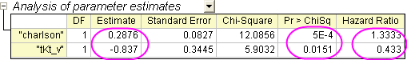
- Das Überlebenszeitfunktionsdiagramm zeigt den Anteil der Einzelnen, die zu jeder Stunde überleben, und eine visuelle Anzeige der Modellvorhersage. Die horizontale Achse zeigt den Zeitpunkt zum Ereignis. Die vertikale Achse zeigt die Überlebenswahrscheinlichkeit.
- 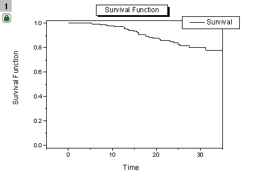
- Das Diagramm der Hazardfunktion zeigt die sofortige Wahrscheinlichkeit des Eintretens eines gegebenen Ereignisses zu einem bestimmten Zeitpunkt an.
- 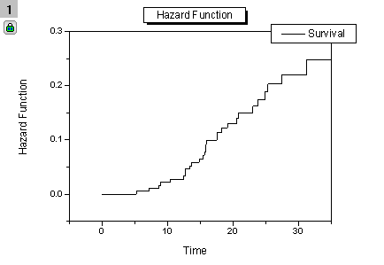